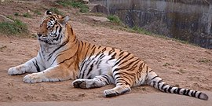

ვეფხვი (ლათ. Panthera tigris) — მტაცებელი ძუძუმწოვარი კატისებრთა ოჯახის, პანტერათა გვარის წარმომადგენელი. ვეფხვი კატისებრთა ოჯახის ყველაზე დიდი წარმომადგენელია, სხეულის სიგრძე 1,4–2,8 მ, კუდის — 0,6–1,1 მ, წონა 100–300 კგ. წაგრძელებული სხეული მოხატული აქვს განივი ზოლებით. გავრცელებულია ჩრდილოეთ კორეაში, ჩინეთში, ინდოეთში, ინდოჩინეთში, მალაის არქიპელაგზე, ჩრდილოეთ ირანში, უსურისა და ამურის მხარეებში, თალიშში, ამუდარიის ხეობაში, იშვიათად თურქმენეთში. ვეფხვი ნადირობს მსხვილ ძუძუმწოვრებზე, იშვიათად ფრინველებზე, ქვეწარმავლებზე და სხვა. თავს ესხმის ადამიანსაც. ვეფხვი 2–3 წელიწადში ერთხელ შობს თვალაუხილავ, უსუსურ 2–4 ბოკვერს (მაკეობა 105 დღემდეა).2 წლის ასაკიდან უკვე საკმაო ძალა აქვს დამოუკიდებლად სანადიროდ, სქესობრივ სიმწიფეს აღქევს 4–5 წლისა, ცოცხლობს საშუალოდ 8–10 წელს. აქვს 6–7 მ სიგრძის ნახტომი.[2] ქართულ ზეპირსიტყვიერებაში და ძვ. მწერლობაში სიტყვა „ვეფხვი“ აღნიშნავდა ჯიქს (ლეოპარდს ანუ პანთერას — Panthera pardus), დღევანდელი გაგებით კი მხოლოდ XX საუკუნეში დამკვიდრდა.[2]
